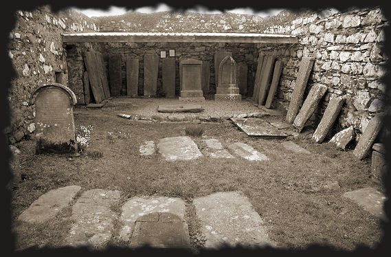

The little chapel at Loch Craignish is dedicated to Saint Maelrubha of Applecross.
Saint Maelrubha (642-722) was a descendant of Niall, King of Ireland, on his father’s side, and of Saint Comgall the Great, of Bangor, on his mother’s side. Aged 30, he left Ireland with a group of other monks and headed to Scotland. He travelled through the Argyll region for two years, building six churches in the process, before settling in Abercrossan (Applecross). It was here that he founded his main chapel, right at the heart of the Pictish nation. From here he undertook missionary journeys to the west, reaching the islands of Skye and Lewis, to Forres and Keith in the east, and to the north, as far as Loch Shinn. It was here, at Teampull, that he was martyred by Danish Vikings. He was buried next to the River Naver, where his tomb is still marked by a rough stone and a simple cross.
The ruins of Kilmarie parochial chapel are to be found on the west bank of Loch Craignish
It is surrounded by a graveyard, where some of the tombs date back to the 13th century.
The most decorative tombstones were moved to the inside of the chapel in 1974.
